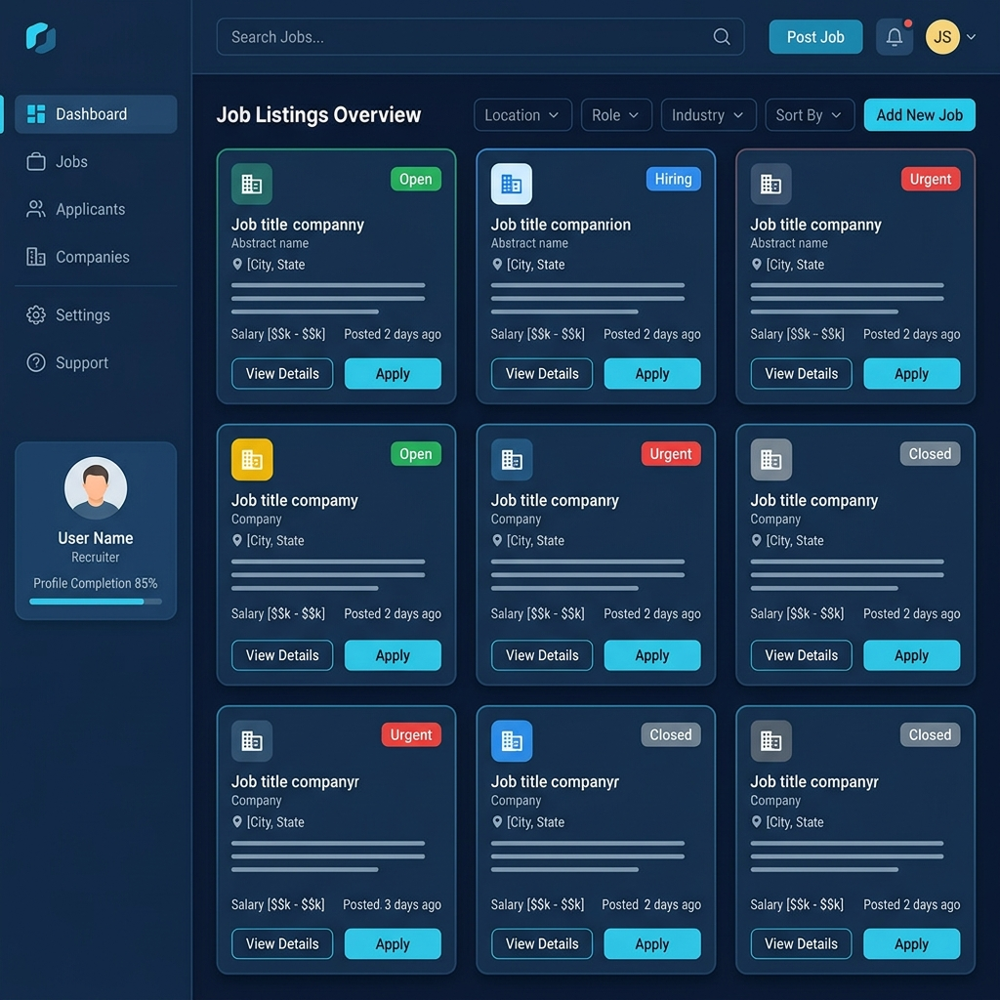
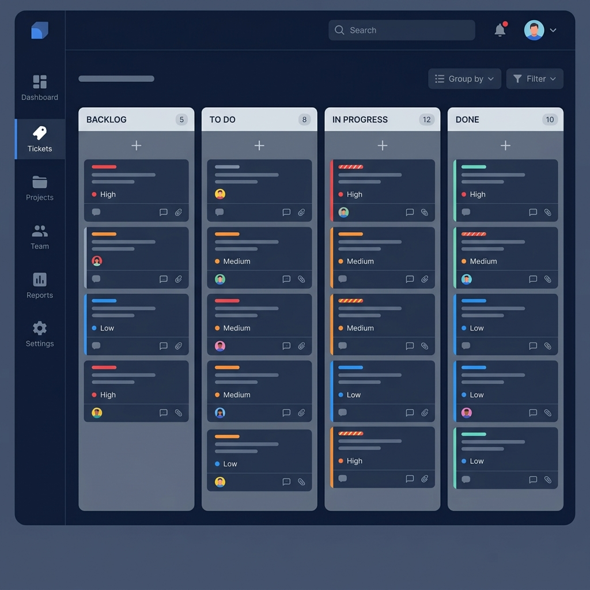
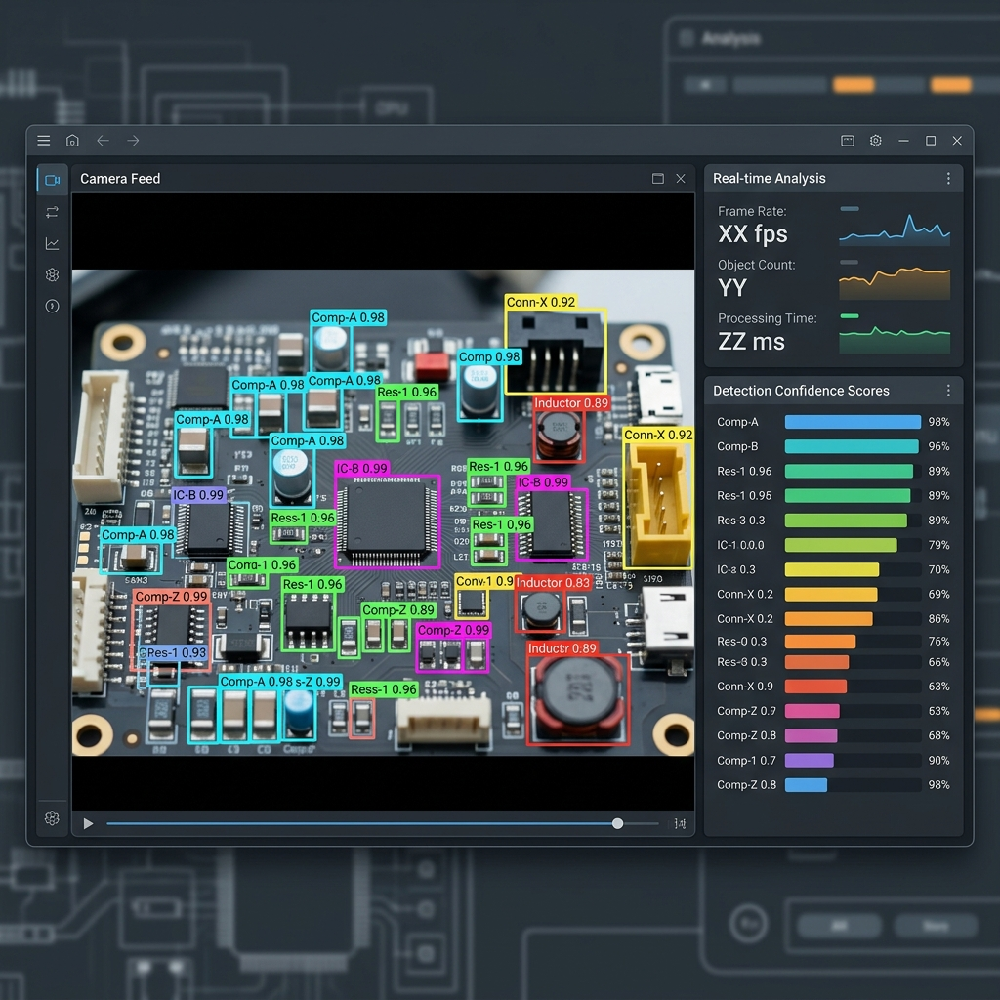

Desde páginas web empresariales hasta plataformas completas, sistemas internos y soluciones con inteligencia artificial. Creo tecnología que resuelve problemas reales y genera resultados.
Cada negocio es diferente. Por eso diseño y desarrollo soluciones digitales a la medida, adaptadas a tus objetivos, tu equipo y tu mercado.
Sitios web modernos y rápidos para negocios pequeños, medianos y grandes que necesitan presencia digital profesional.
Páginas de aterrizaje diseñadas para convertir visitantes en clientes, perfectas para lanzamientos y campañas de ventas.
Software a medida para gestionar operaciones, equipos y procesos dentro de tu empresa de forma organizada.
Paneles administrativos y dashboards interactivos para visualizar datos clave y tomar decisiones informadas.
Elimina tareas repetitivas con automatizaciones inteligentes que ahorran tiempo y reducen errores en tu operación.
Soluciones con IA y visión por computadora para detección, clasificación y análisis inteligente de datos visuales.
Plataformas para conectar personas, servicios u oficios. Marketplaces y redes que generan valor para tus usuarios.
Herramientas de gestión de soporte, reportes y seguimiento para mejorar la atención interna y externa.
Desarrollo integral de plataformas web con bases de datos, autenticación, roles y funcionalidades avanzadas.
Cada proyecto refleja un compromiso con la calidad, la funcionalidad y la experiencia del usuario. Así es como transformo ideas en soluciones reales.

Una plataforma diseñada para conectar personas con oportunidades laborales y prestadores de servicios de manera sencilla y organizada. Un puente digital entre el talento y la oportunidad.

Sistema interno de soporte y gestión de tickets que transformó la manera en que la empresa maneja reportes, seguimientos y resoluciones. Más organización, menos caos.

Sistema basado en visión por computadora e inteligencia artificial que detecta y clasifica componentes electrónicos en tiempo real usando modelos YOLO de última generación.
No importa el tamaño de tu empresa o la complejidad de tu proyecto. Tengo las herramientas y la experiencia para hacerlo realidad.
Sitios web que transmiten profesionalismo y generan confianza en tus clientes.
Software hecho a tu medida para resolver los retos específicos de tu operación.
Menos tareas manuales, más eficiencia. Automatiza lo repetitivo y enfócate en crecer.
Paneles y herramientas internas para organizar equipos, datos y flujos de trabajo.
Inteligencia artificial aplicada a tu negocio: detección, análisis y automatización inteligente.
Arquitectura de datos robusta y escalable para que tu información esté siempre organizada.
Interfaces modernas, atractivas y fáciles de usar que enamoran a los usuarios desde el primer clic.
Desde marketplaces hasta redes de servicios. Plataformas completas listas para escalar.
Tecnología que crece contigo. Desde negocios locales hasta empresas con operación nacional.
Mis servicios se adaptan al tamaño y las necesidades de cada cliente. No importa en qué etapa esté tu negocio, hay una solución para ti.
Presencia digital profesional con páginas web y herramientas que atraen clientes.
Sistemas para organizar procesos, mejorar operaciones y escalar con orden.
Soluciones personalizadas, integraciones complejas y sistemas internos robustos.
Validación de ideas con prototipos funcionales y plataformas mínimas viables.
Proyectos tecnológicos, herramientas educativas y sistemas de gestión académica.
Más que código, entrego soluciones pensadas para funcionar en el mundo real y crecer con tu negocio.
Interfaces que transmiten confianza y reflejan la identidad de tu marca.
Nada genérico. Cada proyecto se diseña pensando en tus necesidades reales.
Siempre sabrás en qué etapa está tu proyecto y qué viene después.
Tecnología con propósito, enfocada en resultados tangibles para tu operación.
Tu solución está preparada para evolucionar junto con tu empresa.
Recibes un producto terminado, documentado y listo para usarse desde el día uno.
No necesitas ser experto en tecnología. Tus herramientas serán intuitivas y simples.
Un proceso claro y estructurado para que siempre sepas qué esperar. Sin sorpresas, solo resultados.
Conocemos tu negocio, tus retos y lo que quieres lograr con tecnología.
Evaluamos las opciones y definimos qué tipo de sistema o herramienta necesitas.
Creamos la arquitectura, las pantallas y el flujo de la solución antes de escribir código.
Construimos la solución con tecnologías modernas, enfocándonos en calidad y rendimiento.
Realizamos pruebas exhaustivas y refinamos cada detalle para asegurar que todo funcione.
Recibes tu proyecto funcionando, con documentación y soporte para que arranques sin complicaciones.
Ya sea que necesites una página web, un sistema completo o una solución con inteligencia artificial, estoy listo para hacerlo realidad. Hablemos de tu proyecto.
Sin compromiso. La primera consulta es gratuita.